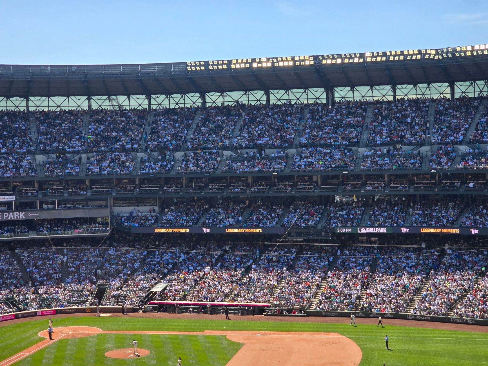

The race for postseason dominance
The landscape of Major League Baseball is shifting rapidly as we approach the most intense period of the calendar. While the regular season standings provide a roadmap of consistency, they do not always predict who will thrive under the bright lights of October. Power rankings offer a different perspective, focusing on current form, pitching depth, and hitting streaks rather than just cumulative wins.
Teams that have spent the last month fine-tuning their rotations and finding rhythm in their middle order are beginning to separate themselves from the pack. It is no longer just about who has the best record, but who is playing their best baseball right now. This distinction is critical when looking at the upcoming Wild Card series, where a single bad outing can end a season instantly.
Analyzing the top contenders
At the top of the power rankings, we see a clear divide between the juggernauts and the hopeful contenders. The elite teams currently possess a balanced approach, featuring both high-velocity starting pitching and a lineup capable of sustained scoring. These teams have managed to navigate injuries and fatigue, arriving at the postseason with their core players healthy and ready for high-leverage situations.
In the postseason, momentum is a tangible force that can turn a struggling lineup into an unstoppable juggernaut overnight.
The wild card battleground
The Wild Card series presents a unique challenge that differs significantly from the traditional division winner path. Because these series are often shorter and more volatile, the power rankings for these specific teams look quite different from the overall league standings. A team might be ranked lower overall but could be surging at exactly the right moment to cause an upset.
We are seeing several middle-of-the-pack teams making aggressive moves to bolster their rosters for this specific window. Whether it is through tactical bullpen management or leaning on veteran leadership, these teams are playing with a desperation that top-seeded teams sometimes lack. This makes the Wild Card round arguably the most unpredictable segment of the entire MLB postseason.
Pitching matchups and strategic advantages
If you want to predict playoff success, you must look at the pitching matchups. A team with a powerhouse offense can be completely neutralized by a single elite starter who can command the zone and limit walks. The current power rankings heavily weigh the ability of a team to present at least three reliable starters who can go deep into games.
Furthermore, the tactical use of the bullpen has become a science. Teams that rank highly in our analysis are those that have clearly defined roles for their relievers, ensuring that their most impactful arms are available when the game is on the line. A chaotic bullpen is often the downfall of even the most talented offensive squads.
Looking ahead to the championship
As we move closer to the final games of the regular season, the tension continues to build. Every game carries immense weight, and every pitching change or substitution could be the difference between a championship run and an early exit. The power rankings will continue to fluctuate until the very last out is recorded in the regular season.
For fans trying to understand the gravity of these final moments, it is helpful to consider what is at stake on the final day of the MLB season? Understanding the playoff implications of these last few games is essential for grasping why certain teams are playing with such intensity. You can read more about these high-stakes scenarios in our deep dive into what is at stake on the final day of the MLB season at https://dhyey.bond/blog/what-is-at-stake-on-the-final-day-of-the-mlb-season/.
See Also
If you enjoyed this Baseball News article, check out What is at stake on the final day of the MLB season? for more useful reading.